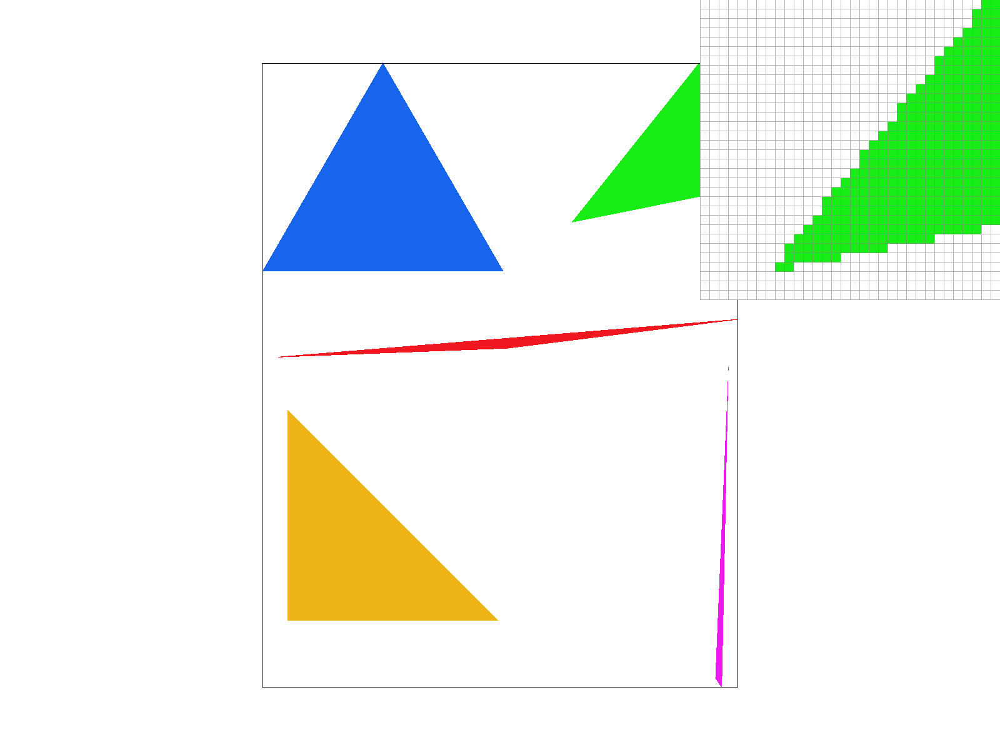
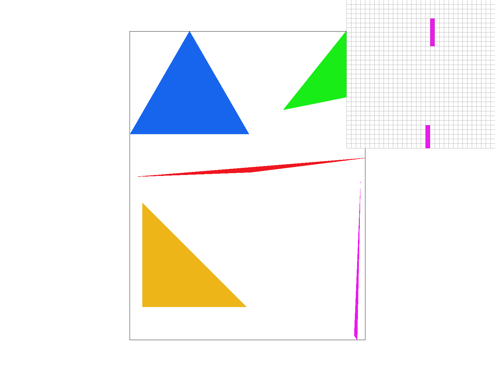
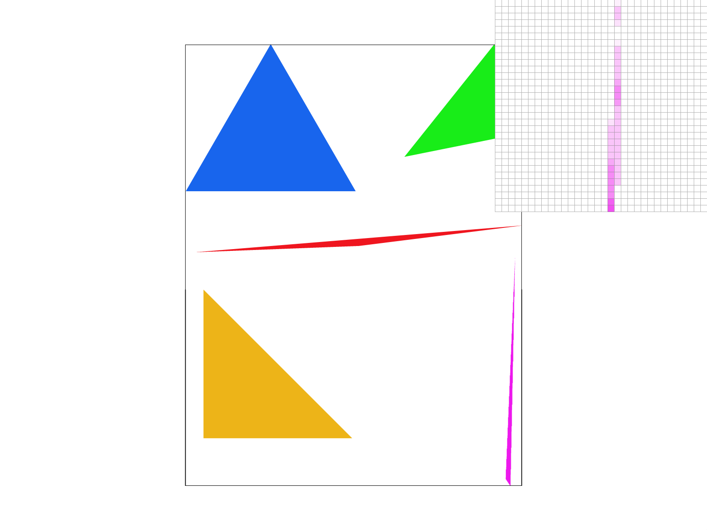
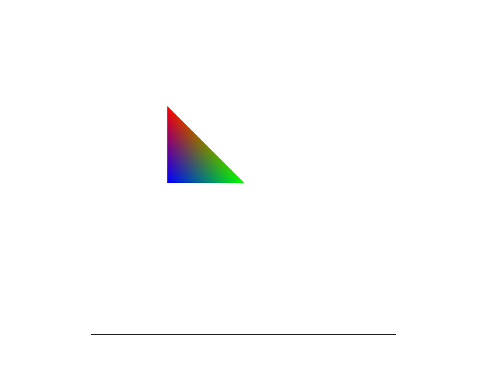
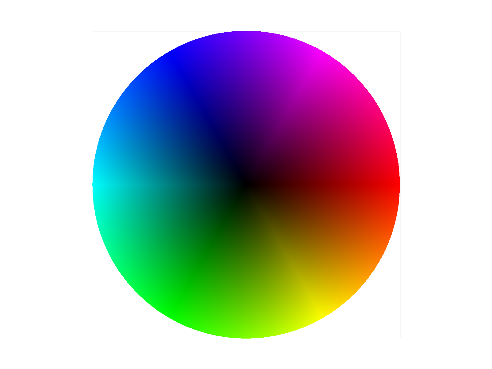
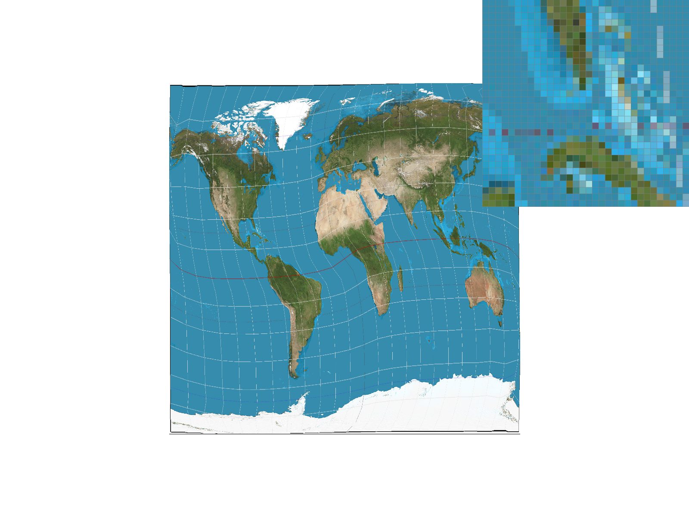
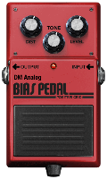

In this homework, I implemented various parts of an SVG rasterizer. In all, my program now supports rasterizing points, lines, single color triangles, multi-colored smoothly interpolated triangles, transforms, as well as textured triangles. It also supports various rasterization modes to view the images. I spent a lot of time trying to also make my program efficient and bug free, as seen in the extra credit portion of task 1. Some of the most interesting things I learned were: How to implement Barycentric coordinates (as well as how remarkably well they work), various kinds of pixel/level sampling and their effects, as well as the impacts of supersampling.
Task 1: Drawing Single-Color Triangles
How to rasterize triangles?
For a particular triangle, we iterate through every single pixel from the smallest rectangle that contains the triangle (its bounding box) and check if the center of that pixel is inside the triangle. If it is, then we color it in.
Explain how your algorithm is no worse than one that checks each sample within the bounding box of the triangle.
I figure out the edges of the triangle and only iterate over the pixels that are inside the triangle, of which there are less than in the entire bounding box. I will explain further in the extra credit section.

basic/test4 focussed on the tip of the green triangle. Extra Credit: Special Optimizations
For my optimization, I tried to get rid of the inner “if” statement that does the checks for each of the edges. For this, I constrained the “x” and the “y” being swept to be exactly within the area of the triangle. This allows me to minimize the number of for loops.
To do this, first I only looked at xs within the minimum x and the maximum x for any of the points in the triangle. Then, I looked at the first y at which I was inside all the triangles, and ended at the final y which was inside all the triangles. This can be done by examining whether y = 0 is inside each line. If it is, then if the point of intersection with the current x has already occurred, I do nothing. However, if it is yet to occur, we know that the minimum of all of these values will be the last y inside all the triangles. Conversely, if at y=0 we are not inside a particular line, if for a positive y we do intersect the current x, we know that the max of all such ys is the first y at which we are inside all triangles.
Performance comparison (measured total microseconds spent in draw function):
Test
Unoptimized (BB Method)
Optimized
basic/test3
5936
984
basic/test4
521
165
basic/test5
5538
1473
basic/test6
1166
374
Task 2: Antialiasing by Supersampling
Walk through your supersampling algorithm and data structures. Why is supersampling useful? What modifications did you make to the rasterization pipeline in the process? Explain how you used supersampling to antialias your triangles.
Instead of storing a width x height array for the sample buffer, I’m now storing a (width * sqrt(sample_rate)) x (height * sqrt(sample_rate)) sample buffer. In my rasterize_triangle function, I now scale each of the x and y coordinates by sqrt(sample_rate) as well. Then, I can use the sample algorithm from last time. I now load a zero into every pixel for sampling into the final image. Then, for every “super-sampled” pixel in the pixel, I add the value of the pixel to the buffer divided by the sample_rate. Supersampling is useful because increasing the sample rate increases the Nyquist frequency and better represents higher frequency signals. Practically, it adds lighter colors to the edges and makes diagonal lines seem smoother by dealing with “jaggies”.

1-pixel supersampling
4-pixel supersampling
9-pixel supersampling

16-pixel supersampling
Task 3: Transforms
I wanted to draw the robot waving.
Say hi
Task 4: Barycentric coordinates
Explain barycentric coordinates in your own words and use an image to aid you in your explanation. One idea is to use a svg file that plots a single triangle with one red, one green, and one blue vertex, which should produce a smoothly blended color triangle.
Barycentric coordinates are coordinates that combine the vectors that make up the vertices of the triangles in certain ratios in order to represent points inside the triangle. A consequence of this is that the associated ratio from each vertex in the Barycentric sense also indicates how far away a certain point is from the center of the triangle. Therefore, we can use this to make smooth linear interpolations between points, for uses such as blending color. Here is an example of a triangle with blue, red, and green on its vertices.

An example triangle

basic/test7
Task 5: "Pixel sampling" for texture mapping
Explain pixel sampling in your own words and describe how you implemented it to perform texture mapping. Briefly discuss the two different pixel sampling methods, nearest and bilinear.
For each pixel, we sample the texture map at the corresponding (u, v) coordinates. Since we’re adding textures to triangles, I used my code from the previous task to calculate the barycentric coordinates in the triangles. This allowed me to LERP between the different vertices, so that I could get the (u, v) coordinates for each (x, y) pixel coordinate. Another note is that the (u, v) coordinates were a fraction and had to be multiplied by the width/height.
The nearest sampling method was quite simple. All I had to do was convert the float (u, v) to an int, as this would be the pixel center a particular (u, v) would be closest to. As for bilinear sampling, I found the dv and the du directions which corresponded to the directions along u and v which were closest to the request (u, v) sample. Then, I wrote a lerp function to lerp between the four points, with greater priority given to the closer pixels.

Nearest, 1-pixel supersampling
Bilinear, 1-pixel supersampling
Nearest, 16-pixel supersampling
Bilinear, 16-pixel supersampling
Task 6: "Level Sampling" with mipmaps for texture mapping
Explain level sampling in your own words and describe how you implemented it for texture mapping.
High-quality texture, when squeezed into a small area on the screen (ie. the texture is far away), can create strange artifacts when sampled, because single pixels can potentially cover hundreds or thousands of pixels in the texture. Therefore, we instead make multiple levels of mipmaps, allowing us finer control over what is seen by the user. The “level” in level sampling corresponds to the quality of the texture, with higher level values being lower quality. Level sampling is how we determine which level to sample from. The default strategy, L_ZERO, is always to sample at the highest quality level. Then, we have L_NEAREST, which uses the formula from lecture to derive a floating point level value, which we round to get the level we are going to use. Finally, we have L_LINEAR, which does a linear interpolation between the two levels a particular floating point value is in between. Finally, I realized that a lot of the time levels can be negative (if extremely close/fine-grained). Therefore, if the computed level value is less than zero, I set it to level zero. You can now adjust your sampling technique by selecting pixel sampling, level sampling, or the number of samples per pixel. Describe the tradeoffs between speed, memory usage, and antialiasing power between the three various techniques.
Increasing number of samples decreases speed, increases memory use, and increases antialiasing power. “Nearest” pixel sampling is faster and has lower memory usage, but “linear” has greater antialiasing power. Finally, for level sampling, the spectrum is from L_ZERO, to L_NEAREST, to L_LINEAR, with each technique being slower, using more memory, but having greater antialiasing power. In general, increased antialiasing power comes at the expense of speed and memory usage.
But for a more qualitative analysis, I felt that the cost to speed for the more advanced pixel and level sampling method was quite negligible for how much antialiasing power they provided. On the other hand, increasing number of samples per pixel definitely made the program feel much slower.

My sample image